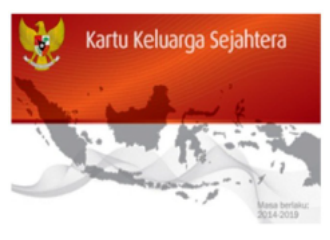
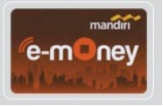
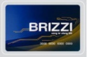
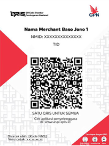
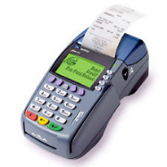
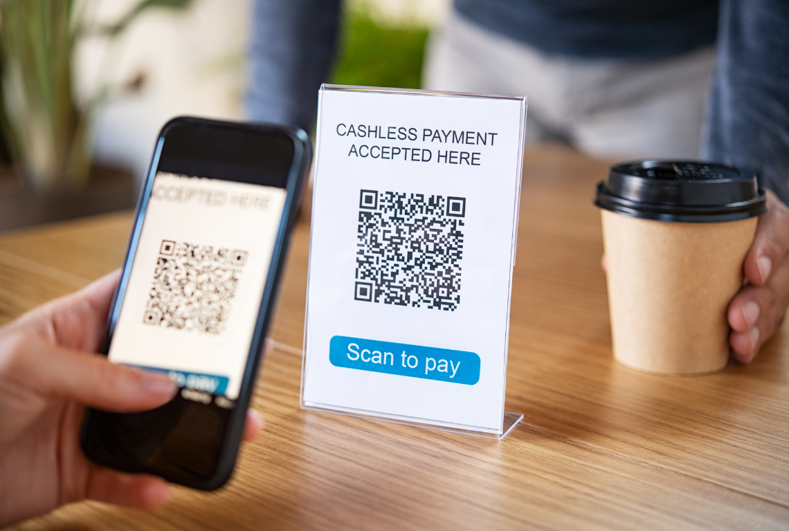
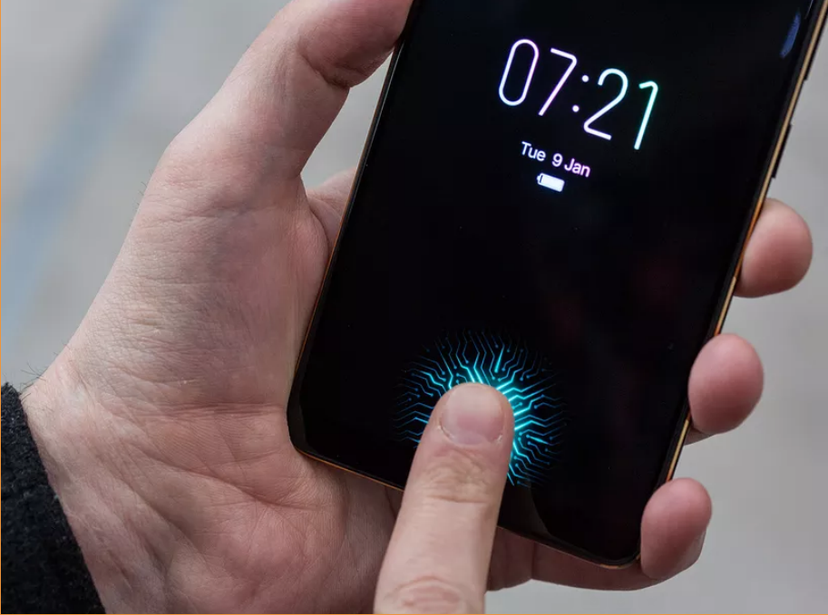
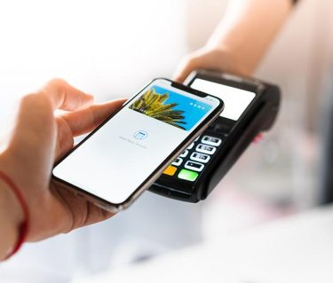

PETUNJUK TEKNIS KUESIONER KPM
BLOK I. SCREENING
102
Misal:
- Jika 3 kali, diisi [0][3]
- Jika 10 kali, diisi [1][0]
103
Misal:
- Jika 1 kali, diisi [1]
- Jika tidak pernah, diisi [0]
Definisi KKS

KKS (Kartu Keluarga Sejahtera): KKS adalah kartu yg digunakan untuk menarik dana bansos yang diterima KPM. Kartu ini merupakan rekening Basic Saving Account (BSA) dengan fungsi menyimpan dana bantuan PKH dan menabung, sekaligus merupakan kartu ATM/debit untuk bertransaksi tarik tunai di ATM atau via EDC di Agen Bank. Selain itu, kartu ini memiliki fitur uang elektronik berbasis server yang berfungsi untuk membeli bantuan pangan (Program Sembako) dan menampung penerimaan bansos/subsidi tunai lainnya.
BLOK II. PROFIL RESPONDEN
201, 209, 210, 211, 212
Kode wilayah dapat dilihat pada tautan berikut:
KODE WILAYAH (bit.ly/juknis-bsnt-2025)
Atau bisa diunduh melalui file Excel pada tautan berikut:
Pencarian kode wilayah dapat dilakukan dengan memasukkan nama wilayah pada kolom pencarian. Kode wilayah berupa kode provinsi, kabupaten/kota,, kecamatan, kelurahan/desa, dan KPwDN tersedia pada tabel. Simak video (pada web) atau gambar berikut untuk tutorial lebih lengkap:
205
Misal: 40 tahun, diisi [4][0]
208
Nama pendamping yang dimaksud adalah nama pendamping sosial yang biasanya ditugaskan sebagai fasilitator untuk KPM.
214 dan 215
- KTP Elektronik (e-KTP): Kartu identitas fisik berbentuk kartu plastik dengan chip elektronik yang berisi data kependudukan. Digunakan secara langsung sebagai bukti identitas.
- KTP Digital: Identitas kependudukan dalam bentuk digital yang diakses melalui aplikasi di perangkat elektronik (misal: smartphone). Tidak berbentuk fisik, tetapi memiliki kekuatan hukum yang sama dengan e-KTP.
217
Definisi Jenis Pekerjaan:
Pekerja Formal:
Pekerja yang bekerja pada institusi atau perusahaan dengan hubungan kerja yang jelas, mendapatkan upah tetap, dan umumnya memiliki perlindungan atau jaminan sosial (misal: pegawai negeri, karyawan swasta, buruh pabrik).Pekerja Informal/Serabutan:
Pekerja yang tidak memiliki hubungan kerja tetap, upah tidak menentu, dan biasanya tidak mendapat perlindungan atau jaminan sosial (misal: buruh harian lepas, tukang ojek, pedagang keliling, pekerja serabutan).Wiraswasta/Wirausaha/Bekerja Sendiri:
Seseorang yang menjalankan usaha atau pekerjaan atas inisiatif sendiri, menanggung risiko usaha, dan tidak bergantung pada pemberi kerja (misal: pemilik warung, petani yang mengelola lahan sendiri, pengrajin mandiri).
219-222
Pertanyaan 219-222 ditanyakan secara horizontal/berurutan untuk setiap jenis program bansos.
Misal:
- Pertanyaan 219 ditanyakan untuk Program Keluarga Harapan (PKH), jika KPM menjawab “Ya, masih berlanjut” (Pilihan 1) atau “Ya, pernah, namun sudah tidak lagi” (Pilihan 2), maka dilanjutkan ke pertanyaan 220-222. Kemudian dilanjutkan ke Program Sembako (PS), dan seterusnya untuk program-program lainnya(baris selanjutnya).
- Jika KPM menjawab “Tidak pernah sama sekali” (Pilihan 3) pada pertanyaan 219, maka pertanyaan 220-222 dibiarkan kosong. Kemudian dilanjutkan ke program-program lainnya (baris selanjutnya).
Daftar Istilah
| Istilah | Definisi singkat |
|---|---|
| Program Keluarga Harapan (PKH) | Bantuan tunai bersyarat bagi keluarga miskin yang punya ibu hamil, balita, lansia, disabilitas, atau anak sekolah. |
| Program Sembako / BPNT | E-voucher pangan bulanan (beras, telur, dsb.) untuk keluarga penerima manfaat miskin. |
| Program Indonesia Pintar (PIP) | Bantuan biaya sekolah tahunan untuk siswa SD–SMA/SMK dari keluarga kurang mampu. |
| Kartu Indonesia Pintar (KIP) Kuliah | Beasiswa kuliah penuh plus uang bulanan bagi lulusan SMA sederajat berprestasi tapi miskin. |
| Kartu Indonesia Sehat (KIS) | Kartu peserta JKN-BPJS; iuran kelas PBI ditanggung pemerintah untuk layanan kesehatan gratis. |
| Bantuan Langsung Tunai (BLT) Dana Desa | Dana tunai bulanan dari Dana Desa bagi keluarga miskin-ekstrem yang belum menerima bansos lain. |
| Kartu Prakerja | Saldo pelatihan online + insentif tunai untuk pencari kerja atau pekerja terdampak. |
| Kartu Tani | Kartu debit terhubung e-RDKK untuk membeli pupuk dan sarana produksi tani bersubsidi. |
219
Catatan untuk enumerator: Pastikan minimal salah satu dari Program Keluarga Harapan (PKH) atau Program Sembako (PS) telah terisi dengan pilihan 1 (Ya, dan masih berlanjut).
220
Ketika KPM menjawab “mengajukan sendiri”, konfirmasi kembali melalui RT/RW/Desa (Pilihan 1), melalui petugas pendamping PKH (Pilihan 2) atau melalui petugas Dinas Sosial (Kecamatan) (Pilihan 3).
224-225
Pertanyaan 224-225 hanya ditanyakan kepada KPM program PKH.
BLOK III. KONDISI EKONOMI
303
Subsidi listrik diperuntukkan kepada seluruh golongan daya 450 VA dan rumah tangga miskin dan tidak mampu yang terdaftar dalam Data Terpadu Kesejahteraan Sosial (DTKS) dengan daya 900 VA (900 VA-Subsidi).
304
PAM (Perusahaan Air Minum) adalah sistem penyediaan air minum yang menggunakan pipa untuk mengalirkan air dari sumbernya ke rumah tangga. Biasanya dikelola oleh PDAM (Perusahaan Daerah Air Minum).
Sumur Pompa adalah sumur yang dilengkapi dengan mesin pompa untuk mengangkat air dari dalam tanah ke permukaan.
Sumur Timba adalah sumur tradisional yang menggunakan timba untuk mengambil air secara manual menggunakan tali dan ember.
309
Diisi dengan jumlah orang diluar responden. Misal:
- Jika responden adalah seorang suami dengan istri dan 2 anak yang tinggal serumah dan masih diberi tanggungan, maka diisi [0][3] (istri dan 2 anak).
- Jika responden adalah seorang istri dengan suami dan 3 anak yang tinggal serumah dan masih diberi tanggungan, maka diisi [0][4] (suami dan 3 anak). Dalam konsep ekonomi, suami masih masuk dalam tanggungan karena dalam prakteknya bisa saja suami menghasilkan namun tidak cukup untuk membiayai keluarga.
- Jika ada orang tua (lansia) yang tinggal serumah dan masih diberi tanggungan, maka diisi juga dalam jumlah tanggungan.
- Jika tidak ada tanggungan, maka diisi [0][0].
310-313
Pertanyaan 310-313 ditanyakan secara horizontal/berurutan untuk setiap tanggungan yang ada.
Isian 309 harus konsisten dengan isian 310-313. Jika memiliki 3 tanggungan (misal istri dan 2 anak kandung), maka bisa diisi dengan contoh berikut:
| Tanggungan ke- | 310 | 311 | 312 | 313 |
|---|---|---|---|---|
| 1 | [2] | [5][0] | [1] | [1] |
| 2 | [3] | [1][7] | [2] | [1] |
| 3 | [3] | [1][5] | [2] | [1] |
Baris pertama diisi dengan isian untuk istri, baris kedua diisi untuk anak pertama, dan baris ketiga diisi untuk anak kedua. Jika tidak ada tanggungan, maka isian 310-313 dibiarkan kosong. Apabila jumlah tanggungan responden KPM berjumlah lebih dari 5 orang, maka enumerator dapat menambahkan baris baru pada kuesioner.
313
Sehat – Kondisi tubuh yang berfungsi normal tanpa adanya gangguan kesehatan. Contoh: Tidak ada keluhan kesehatan atau penyakit yang dialami.
Sakit Kronis – Kondisi kesehatan yang berlangsung lama dan sering membutuhkan perawatan jangka panjang. Contoh: Diabetes, hipertensi, atau penyakit jantung.
Disabilitas – Kondisi yang mengakibatkan keterbatasan fungsi fisik atau sensorik, baik sementara maupun permanen. Contoh: Patah tulang yang menyebabkan keterbatasan fungsi bergerak dalam jangka waktu lama.
319-320
Pertanyaan 319-320 ditanyakan secara horizontal/berurutan untuk setiap pilihan bantuan/pinjaman dari pihak lain.
Misal:
- Ketika KPM memperoleh/pernah meminjam dari Bank pada pertanyaan 319, maka pertanyaan 320 harus diisi. Kemudian dilanjutkan ke pilihan bantuan/pinjaman lain seperti Agen Bank, Keluarga, atau lainnya (baris selanjutnya).
- Jika KPM tidak memperoleh bantuan/pinjaman dari pihak pada pertanyaan 319, maka pertanyaan 320 dibiarkan kosong. Kemudian dilanjutkan ke pilihan bantuan/pinjaman lain (baris selanjutnya).
BLOK IV. PEMAHAMAN DAN PENGALAMAN DALAM PENARIKAN BANSOS NON TUNAI
404
Enumerator sebaiknya mengurutkan opsi berdasarkan prioritas, mengingat responden terkadang mengubah pilihannya. Oleh karena itu, responden diminta memilih antara opsi 1 versus 2, opsi 2 versus 3, dan seterusnya, hingga teridentifikasi satu opsi yang paling disukai.
405-406
Pertanyaan 405-406 ditanyakan secara horizontal/berurutan untuk setiap pilihan yang ada.
- Pertama, tanyakan pertanyaan 405 untuk pilihan pertama (A. Manfaat penyaluran bansos non tunai), Jika KPM menjawab ya (ceklis), maka lanjutkan ke pertanyaan 406 untuk pilihan pertama tersebut.
- Kemudian lanjutkan ke pilihan kedua (B. Cara penarikan bansos non tunai), dan seterusnya.
- Jika KPM tidak mendapatkan informasi terkait pilihan tersebut, maka pertanyaan 406 dibiarkan kosong.
407
jika terdapat responden yang menerima langsung KKS yang sudah aktif maka jawabannya adalah TIDAK
410-412
Istilah pembaruan data merujuk kepada aktivitas pembaruan (update) data identitas responden, terutama apabila responden telah melakukan kegiatan yang mengubah data pribadinya, seperti pindah alamat rumah, kematian/kelahiran anggota keluarga, penggantian nomor HP pribadi, dsb.
413-415
Pertanyaan 413-415 ditanyakan secara horizontal/berurutan untuk setiap lokasi penarikan bansos non tunai.
Misal:
- Pertanyaan 413 ditanyakan untuk Agen Bank di wilayah setempat, jika KPM menjawab >0 kali, maka dilanjutkan ke pertanyaan 414-415. Setelah itu dilanjutkan ke Mesin ATM Bank penerbit KKS di wilayah setempat, dan seterusnya untuk lokasi penarikan lainnya.
- Jika KPM tidak pernah melakukan penarikan bansos non tunai di lokasi tersebut (0 kali), maka pertanyaan 414-415 dibiarkan kosong. Kemudian dilanjutkan ke lokasi penarikan lainnya.
Catatan:
Agen di wilayah setempat: Berada di wilayah desa/kelurahan tempat tinggal responden, sehingga mudah dijangkau.
Agen di wilayah lain: Berada di wilayah desa/kelurahan lain.
415
Biaya bensin motor per kilometer (km)
Dengan asumsi 1 liter bensin jenis pertalite = Rp 10.000, dan 1 liter bensin dapat menempuh jarak 50 km, maka biaya bensin per kilometer adalah Rp 10.000 / 50 km = Rp 200/km.
Tabel konversi biaya bensin per kilometer:
| Jarak (km) | Biaya Bensin (Rp) |
|---|---|
| 1-5 | 1000 |
| 6-10 | 2000 |
| 11-15 | 3000 |
| 16-20 | 4000 |
| 21-25 | 5000 |
| 26-30 | 6000 |
| Dan seterusnya |
422
| Istilah | Definisi |
|---|---|
| KKS hilang/rusak | KKS hilang atau mengalami kerusakan secara fisik (misal: kartu patah) sehingga tidak bisa digunakan untuk melakukan transaksi. |
| KKS terblokir | Responden KPM melakukan aktivitas transaksi (seperti salah memasukkan PIN sebanyak 3 kali) yang menyebabkan KKS terblokir. |
| KKS tertelan mesin ATM | KKS tertinggal atau tersangkut di dalam mesin ATM sehingga tidak dapat dikeluarkan. |
| Lupa PIN | Responden KPM tidak ingat sama sekali PIN KKS ketika ingin melakukan transaksi. |
| Salah memasukkan PIN | Responden salah memasukkan PIN KKS-nya, namun tidak sampai menyebabkan KKS terblokir. |
| Dana belum masuk (saldo nol) | Dana bantuan sosial belum ditransfer ke rekening KKS atau saldo dalam kartu menunjukkan nol rupiah. |
| Mesin ATM tidak berfungsi | Mesin ATM mengalami gangguan teknis atau kerusakan sehingga tidak dapat digunakan untuk transaksi. |
| Mesin EDC di Agen Bank tidak berfungsi | Mesin EDC yang tersedia di Agen Bank mengalami gangguan atau kerusakan sehingga tidak dapat memproses transaksi KKS. |
| Agen Bank tidak memiliki cukup dana tunai | Agen Bank kehabisan atau tidak memiliki dana tunai yang cukup untuk melayani penarikan bantuan sosial. |
425
Apabila responden KPM pernah mengalami beberapa masalah dengan sebagian masalah berhasil diselesaikan dan sebagian lainnya masih dalam proses, maka pilihan 1 (Ya, selesai) dapat dipilih
426
Misal: 7 hari, diisi [0][0][7]
427
Pertanyaan 427 hanya ditanyakan kepada KPM program PKH.
428
Pertanyaan 428 hanya ditanyakan kepada KPM program Sembako.
429
Pertanyaan 429 hanya ditanyakan jika KPM mernjawab “Ditabung” pada pertanyaan 428 dan/atau 429.
432-433
Pertanyaan 432-433 hanya ditanyakan kepada KPM program PKH.
434
Untuk pilihan 4 (Bank Daerah), enumerator perlu menyebutkan nama Bank Daerah di wilayah wawancara (misal: Bank Jabar di Bandung)
437-439
Pertanyaan 437-439 hanya ditanyakan kepada responden yang pernah menarik bansos melalui Agen Bank (responden menjawab pilihan “A. Agen Bank di wilayah setempat” dan/atau “E. Agen Bank di wilayah lain” pada pertanyaan 413). Jika tidak pernah menarik bansos di Agen Bank, lanjut ke pertanyaan 440.
440
Dari pilihan A-G pada pertanyaan 440, pilih 3 pilihan yang paling diinginkan oleh responden KPM. Beri urutan 1, 2, dan 3 pada pilihan yang dipilih. Pastikan tidak lebih dari 3 pilihan yang diurutkan.
Daftar Istilah
| Istilah | Definisi |
|---|---|
| Mobile Banking | Fasilitas transaksi non tunai melalui aplikasi perbankan pada handphone. Contoh: BCA Mobile Banking, Livin’ by Mandiri, BRImo, Jago, Jenius, dll. |
| SMS (Short Message Service) Banking | Fasilitas transaksi non tunai melalui short message service menggunakan handphone. |
| Internet Banking | Fasilitas transaksi non tunai melalui laman website bank. |
| Uang Elektronik berbasis kartu/chip | Sistem pembayaran non tunai yang memiliki bentuk fisik berupa kartu dengan sebuah chip di dalamnya. Nilai nominal saldo uang yang tersedia tersimpan di dalam chip, sehingga apabila pengguna mengalami kehilangan kartu, maka saldo uang yang dimilikinya akan hilang juga. Contoh: e-Money, Flazz, BRIZZI, TapCash   |
| Uang Elektronik berbasis server | Sistem pembayaran non tunai yang tidak berbentuk fisik melainkan berbentuk aplikasi. Saldo dalam uang elektronik ini dapat dilihat melalui aplikasi ponsel, dengan pencatatan kepemilikan yang tersimpan di server. Contoh: Dana, ShopeePay, LinkAja, OVO, Go-Pay |
| QRIS (Quick Response Indonesia Standard) | Serangkaian kode yang memuat data/informasi a.l. identitas pedagang/pengguna, nominal pembayaran, dan/atau mata uang yang dapat dibaca dengan alat tertentu dalam transaksi pembayaran.  |
| Mekanisme KKS | Mekanisme penarikan bansos yang saat ini berlaku menggunakan Kartu Keluarga Sejahtera (KKS). |
BLOK V. PEMAHAMAN DAN PENGALAMAN DALAM MELAKUKAN TRANSAKSI DIGITAL
506-507
Pertanyaan 506-507 ditanyakan secara horizontal/berurutan untuk setiap jenis fasilitas transaksi keuangan yang ada.
Misal:
- Pertanyaan 506 ditanyakan untuk Teller di Kantor Bank, jika KPM menjawab Ya (ceklis), maka dilanjutkan ke pertanyaan 507. Kemudian dilanjutkan ke jenis fasilitas transaksi keuangan lainnya seperti ATM, Mesin EDC, dan seterusnya (baris selanjutnya).
- Jika KPM tidak mengetahui jenis fasilitas transaksi keuangan tersebut, maka pertanyaan 507 dibiarkan kosong. Kemudian dilanjutkan ke jenis fasilitas transaksi keuangan lainnya (baris selanjutnya).
508
Petanyaan 508 hanya ditanyakan kepada KPM yang menjawab Ya (ceklis) pada pertanyaan 507. Beri urutan 1, 2, dan 3 pada pilihan yang dipilih. Pastikan tidak lebih dari 3 pilihan yang diurutkan. Jika hanya 1 atau 2 pilihan yang dipilih, maka urutan 2 dan/atau 3 dibiarkan kosong.
Daftar Istilah
| Istilah | Definisi |
|---|---|
| Teller di Kantor Bank | Kegiatan melakukan transaksi keuangan melalui petugas teller di kantor cabang bank. |
| ATM (Automatic Teller Machine) | Mesin yang digunakan untuk melakukan penarikan tunai dari rekening dan/atau mengakses layanan lain, seperti cek saldo, transfer dana, atau setor tunai. |
| Mesin EDC (Electronic Data Capture) | Mesin/alat yang digunakan dalam transaksi pembayaran non tunai yang disediakan oleh Bank.  |
| Uang elektronik berbasis kartu/chip | Sistem pembayaran non tunai yang memiliki bentuk fisik berupa kartu dengan sebuah chip di dalamnya. Nilai nominal saldo uang yang tersedia tersimpan di dalam chip, sehingga apabila pengguna mengalami kehilangan kartu, maka saldo uang yang dimilikinya akan hilang juga. Contoh: e-Money, Flazz, BRIZZI, TapCash |
| Uang elektronik berbasis server | Sistem pembayaran non tunai yang tidak berbentuk fisik melainkan berbentuk aplikasi. Saldo dalam uang elektronik ini dapat dilihat melalui aplikasi ponsel, dengan pencatatan kepemilikan yang tersimpan di server. Contoh: LinkAja, OVO, Go-Pay, Dana, ShopeePay |
| Internet Banking | Fasilitas transaksi non tunai melalui laman website bank. |
| Mobile Banking | Fasilitas transaksi non tunai melalui aplikasi perbankan pada handphone. Contoh: BCA Mobile Banking, Livin’ by Mandiri, BRImo, Jago, Jenius, dll. |
| SMS (Short Message Service) Banking | Fasilitas transaksi non tunai melalui short message service menggunakan handphone. |
| QRIS (Quick Response Indonesia Standard) | Serangkaian kode yang memuat data/informasi a.l. identitas pedagang/pengguna, nominal pembayaran, dan/atau mata uang yang dapat dibaca dengan alat tertentu dalam transaksi pembayaran. |
509-511
Pertanyaan 509-511 ditanyakan secara horizontal/berurutan untuk setiap jenis kegiatan transaksi keuangan yang ada.
Misal:
- Pertanyaan 509 ditanyakan untuk kegiatan transaksi keuangan A (Tarik atau setor tunai), jika KPM menjawab Ya (ceklis), maka dilanjutkan ke pertanyaan 510. Kemudian jika KPM menjawab Ya (ceklis) pada pertanyaan 510, maka dilanjutkan ke pertanyaan 511. Setelah itu dilanjutkan ke jenis kegiatan transaksi keuangan lainnya seperti Transfer dana/uang, Pembayaran tagihan, dan seterusnya (baris selanjutnya).
- Jika KPM tidak pernah melakukan kegiatan transaksi keuangan tersebut, maka pertanyaan 510-511 dibiarkan kosong. Kemudian dilanjutkan ke jenis kegiatan transaksi keuangan lainnya (baris selanjutnya).
512-514
Pertanyaan 512-514 hanya ditanyakan jika responden pernah mengalami masalah dalam melakukan transaksi keuangan (terdapat opsi yang diceklis pada pertanyaan 510), lainnya lanjut ke pertanyaan 516.
514
Apabila responden KPM pernah mengalami beberapa masalah dengan sebagian masalah berhasil diselesaikan dan sebagian lainnya masih dalam proses, maka pilihan 1 (Ya, selesai) dapat dipilih
515
Misal: 7 hari, diisi [0][0][7]
518-520
Pertanyaan 518-520 ditanyakan secara horizontal/berurutan untuk setiap jenis kegiatan transaksi keuangan yang ada.
Misal:
- Pertanyaan 518 ditanyakan untuk kegiatan transaksi keuangan A (Tarik tunai dari mesin ATM berbeda), jika KPM menjawab Ya (ceklis), maka dilanjutkan ke pertanyaan 519. Kemudian jika KPM menjawab Ya (ceklis) pada pertanyaan 519, maka dilanjutkan ke pertanyaan 520. Setelah itu dilanjutkan ke jenis kegiatan transaksi keuangan lainnya (baris selanjutnya).
- Jika KPM tidak mengetahui adanya biaya dari kegiatan transaksi keuangan tersebut, maka pertanyaan 519-520 dibiarkan kosong. Kemudian dilanjutkan ke jenis kegiatan transaksi keuangan lainnya (baris selanjutnya).
BLOK VI. KEPEMILIKAN HANDPHONE DAN KUALITAS SINYAL
607
Daftar Istilah
| Istilah | Definisi |
|---|---|
| Internet seluler (paket data HP) | Akses internet yang diperoleh melalui paket data pada jaringan seluler menggunakan HP/smartphone. |
| Internet fiber optik/kabel | Akses internet yang menggunakan kabel fiber optik untuk kecepatan dan stabilitas tinggi. Misalnya, Indihome, Biznet, First Media. |
| Internet satelit / VSAT | Akses internet yang menggunakan jaringan satelit, biasanya untuk daerah terpencil atau khusus. Misalnya Starlink. |
| Internet Wi-Fi publik/desa atau Wi-Fi gratis lainnya | Akses internet melalui jaringan WiFi yang disediakan secara umum di area publik/desa atau yang tersedia secara gratis di sekitar wilayah Agen Bank yang disediakan oleh lembaga atau pihak tertentu. |
609-611
Pertanyaan 609-611 ditanyakan secara horizontal/berurutan. Jika pada pertanyaan 609 jawabannya “Ya”, maka lanjutkan ke pertanyaan 610. Pada pertanyaan 510, jika pilihan terceklis maka lanjutkan ke pertanyaan 515. Pilihan yang memiliki kolom dengan kotak hitam (■) tidak perlu ditanyakan kepada responden.
Daftar Istilah
| Istilah | Definisi | Ilustrasi |
|---|---|---|
| Scan QR (QRIS) | Serangkaian kode yang memuat data/informasi a.l. identitas pedagang/pengguna, nominal pembayaran, dan/atau mata uang yang dapat dibaca dengan alat tertentu dalam transaksi pembayaran. Kode QR dapat dipindai menggunakan kamera smartphone untuk melakukan transaksi pembayaran non tunai. |  |
| Pengenal sidik jari | Teknologi autentikasi biometrik yang menggunakan pola sidik jari unik seseorang untuk mengidentifikasi dan memverifikasi identitas pengguna dalam transaksi atau akses sistem. |  |
| Pengenal wajah | Teknologi autentikasi biometrik yang menggunakan algoritma pengenalan wajah untuk mengidentifikasi dan memverifikasi identitas seseorang berdasarkan fitur wajah yang unik. | |
| Near Field Communication (NFC) | Teknologi komunikasi nirkabel jarak pendek yang memungkinkan perangkat elektronik untuk bertukar data dengan mendekatkan atau menempelkan perangkat (biasanya dalam jarak kurang dari 4 cm). Sering digunakan untuk pembayaran contactless dengan menempelkan kartu atau smartphone ke mesin EDC. |  |
612
Pilihan 3, yaitu “Mencari informasi”, dapat dipilih apabila responden melakukan kegiatan aktivitas pencarian informasi atau pengetahuan yang dapat bersumber dari kegiatan browsing (menggunakan search engine google), grup media sosial (grup WhatsApp), video edukatif (Youtube, Facebook, TikTok), dsb.
BLOK VII. PERSEPSI TERHADAP BANSOS NON TUNAI
701-702
Enumerator dapat menyederhanakan kalimat pernyataan-pernyataan yang ada dengan bahasa sendiri agar responden dapat lebih mudah memahami maksud pernyataan yang ditanyakan.